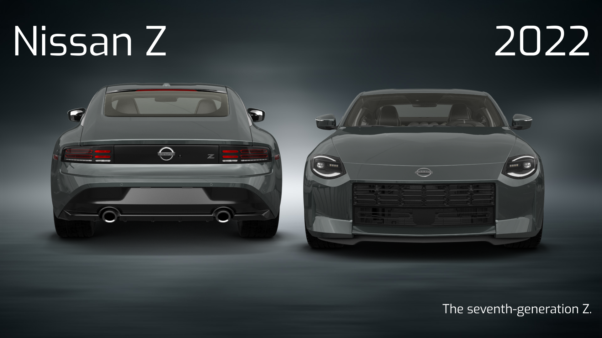

The Nissan Z, known in Japan as the Nissan Fairlady Z (Japanese: 日産・フェアレディZ, Hepburn: Nissan Fearedi Zetto), is the seventh generation of the Z-car line of sports cars manufactured by Nissan. The model succeeded the 370Z, using a modified and revised version of the previous generation's platform. The model also drops the numerical naming of the previous generations.
The Z was introduced as a concept car in September 2020 as the Z Proto concept, and was announced as a production car form in August 2021. it featured Nissan's VR30DDTT engine and built on an evolution of Nissan FM Z34 platform, giving a model code "RZ34". It also has two transmission options, a 6-speed manual and a 9-speed automatic transmission. Deliveries began in late 2022 and was offered with two trims, "Performance" and "Sport". More powerful and track-focused, Z Nismo was introduced in July 2023 with significant upgrades over the standard version. The Z is also involved in various motorsports, such as in Super GT and GT4 Racing. It is well received among car enthusiasts and motor publications with winning a Drive's Car of The Year award and becoming a finalist of World Car of The Year awards.
In 2018, the seventh-generation Nissan Z was first hinted at by Alfonso Albaisa, Senior Vice President for Global Design of Nissan, confirmed to Australian automotive magazine WhichCar that a direct successor to the Nissan 370Z was in development. On March 19, 2020, Nissan filed a trademark for a new version of the Z-car logo. On May 28, 2020, as part of Nissan's global restructuring plan, named "Nissan Next", Nissan's official YouTube channel released a short video showcasing its updated vehicle lineup, including the new Z-car; this video also confirmed that the new Z-car would have retro styling, with its overall shape and circular running lights referencing the 240Z. On September 15, 2020, Nissan revealed the prototype version called the "Nissan Z Proto Concept". The prototype was 4,382 mm (172.5 in) long, which is 142 mm (5.6 in) longer than the 370Z, and the same width.
The production model Z was foreshadowed by the Z Proto concept, which was presented on September 15, 2020. The production version of the Z was unveiled on August 17, 2021, at New York City by Nissan's official YouTube channel, and the car was presented by Cody Walker (brother of Paul Walker). The production model was offered in two trim levels: Z Sport (Fairlady Z Version S in Japan) and Z Performance (Fairlady Z Version ST in Japan). Production of the new Z, began in April 2022, with sales set to begin in June 2022. However, in April 2022, Nissan announced that worldwide deliveries of the Z will be delayed until mid 2022, due to the impact of the supply parts. Deliveries began in late 2022. Nissan achieved 263 U.S. sales in fiscal year 2022 and 1,771 U.S. sales in fiscal year 2023, for a total of 2,034 Z units sold in the United states as of December 31, 2023.
Nissan announced that the Z would not be available for European markets including the United Kingdom, Ireland, Türkiye and Ukraine, due to strict emissions and noise regulations. The Z is only sold in the Japanese, North American, Australian, New Zealand, Southeast Asian, Middle Eastern (GCC countries) and Latin American markets. Pricing for the Japanese market Z was announced in April 2022, with the base version S (Sport version) starting at ¥5,241,500 (US$41,081 as of exchange rates at the time), and the version ST (Performance version) starting at ¥6,462,500 (US$50,650 as of exchange rates at the time). United States pricing was also announced, starting at US$41,015 for the Sport version, and US$51,015 for the Performance version.
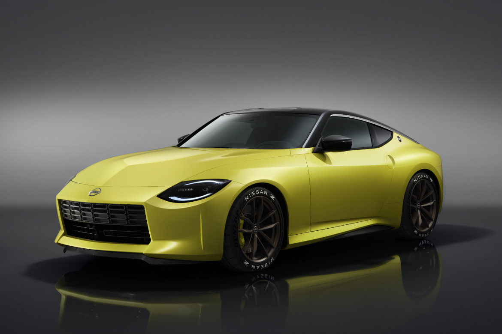
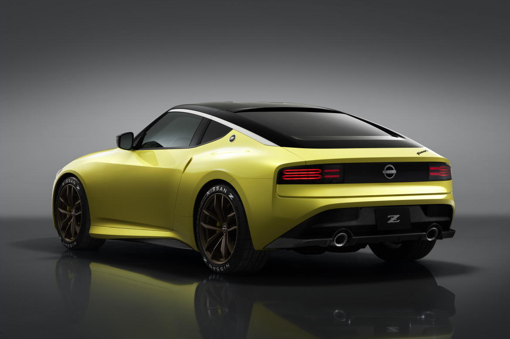
To celebrate the launch, Nissan introduced limited-run configurations. The highly anticipated Proto Spec edition showcased distinctive yellow interior stitching and exclusive bronze-finished lightweight RAYS wheels.
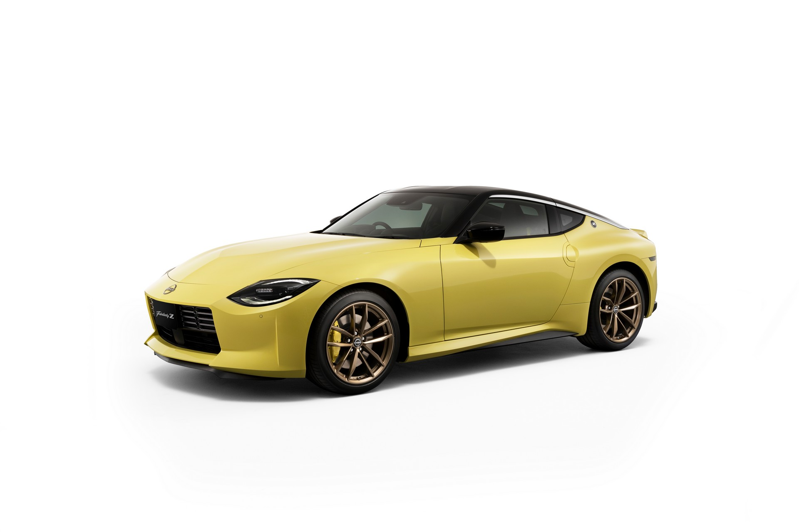
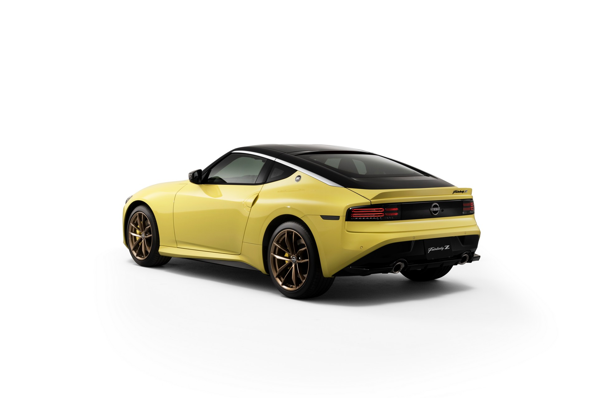
At the 2022 Tokyo Auto Salon, Nissan unveiled a one-off prototype named Fairlady Z Customized Proto, which was slightly different than the Z Proto Launch Edition. Nissan claimed they introduced this Proto to honor its predecessors heritage and to "gauge customer and fan interest for potential future accessory offerings".
This Fairlady Z Customized Proto features a new orange body color, split front grille, black eight-spoke wheels with "Nissan Z" badged tires, black graphics package with black roof, accents and stripes, front fender flares and carbon-fiber front splitter and side skirts. No technical changes have been made from the production version Z
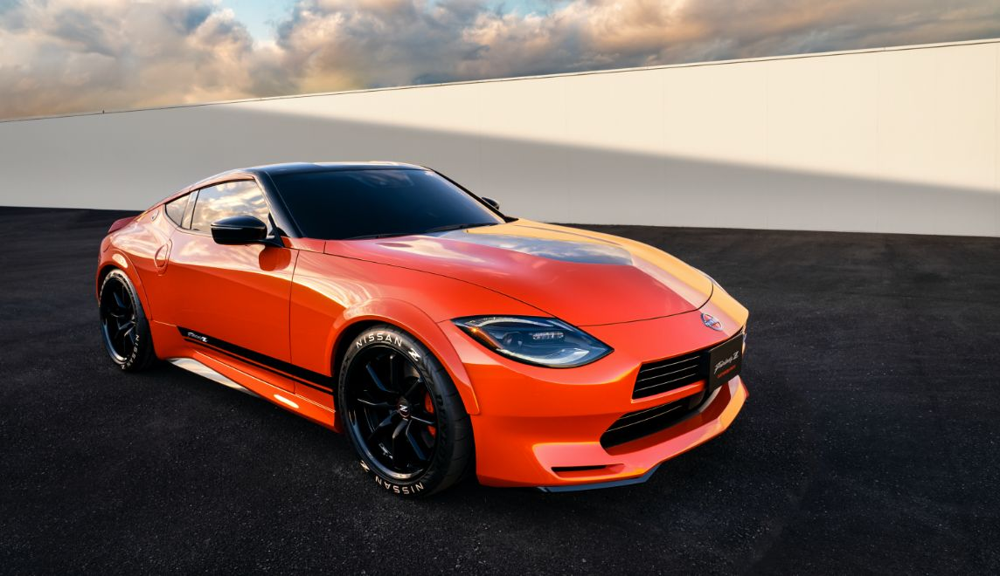
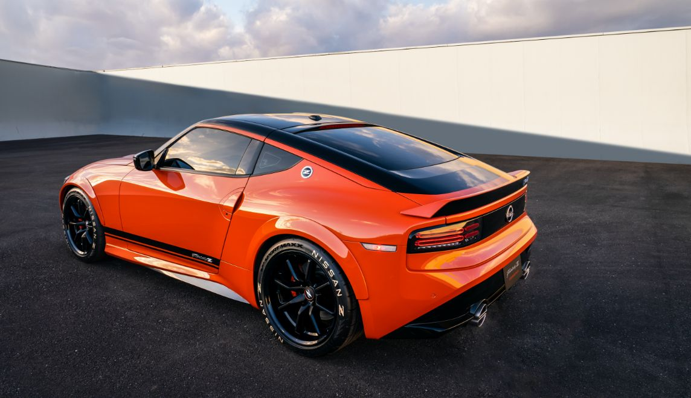
The Z Performance (known as Fairlady Z Version ST in Japan) has the same VR30DDTT, a 3.0-liter twin turbocharged V6 engine, generating a maximum power output of 298 kW (400 hp; 405 PS) at 6,400 rpm and 475 N⋅m (350 lb⋅ft; 48 kg⋅m) of torque at 1,600 to 5,600 rpm with a redline at 6,800 rpm. This trim also has the same 6-speed manual transmission and 9-speed automatic transmission. This trim retains all the features and upgrades of the base Sport trim as well as other features.
Other upgrades includes: SynchroRev Match rev-matching system for manual transmission models, GT-R-inspired paddle shifters with launch control for automatic transmission models, an even sportier suspension setup over the Sport trim, larger brake rotors with 14.0-inch for the front and 13.8-inch in the rear and also red floating aluminum calipers with 4-piston up front and 2-piston for the rear. For the Performance trim, Nissan also offers a mechanical clutch-type limited-slip differential, 19-inch Rays super lightweight forged alloy wheels with Bridgestone Potenza S007 high-performance street tires, front and rear spoilers to improve downforce, sports dual exhaust outlets, heated leather seats with four-way power-adjustable, 9.0-inch touchscreen infotainment with navigation, NissanConnect services and 8-speaker Bose audio system. The manual transmission version has curb weight of 1,604 kg (3,536 lb) and the automatic transmission version has a curb weight of 1,634 kg (3,602 lb).
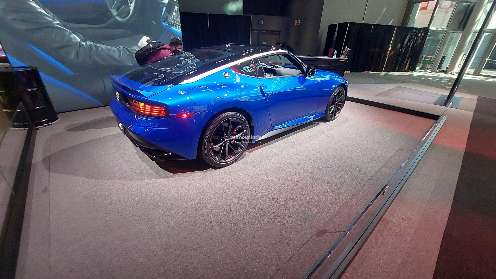
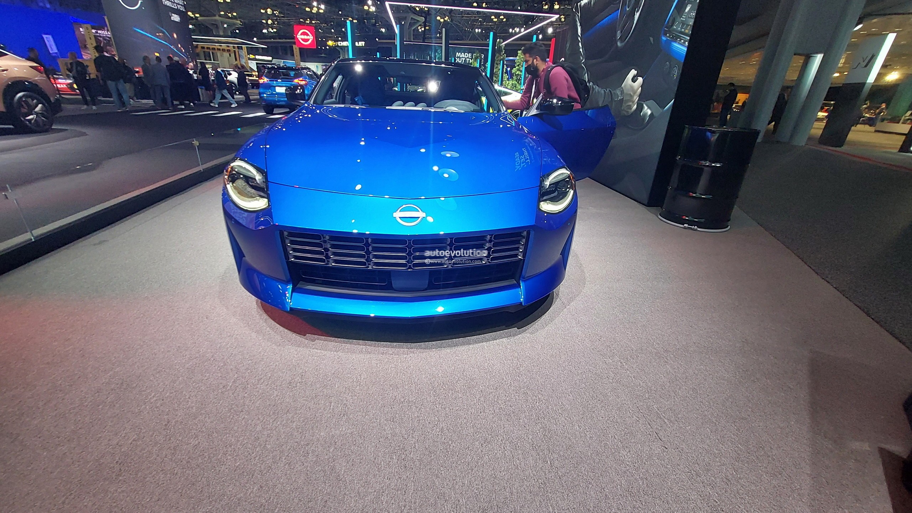
The Z Nismo was revealed on August 1, 2023 for the 2024 model year, with significant upgrades over the standard Z both visually and mechanically. Starting off with the mechanical upgrades, the VR30DDTT engine of the Z Nismo was offered with a redesigned wastegate, enhanced ignition timing, engine cooling and oil cooling system, inspired by the GT-R Nismo. Maximum power output of the upgraded engine is now rated at 420 hp (313 kW; 426 PS) at 6,400 rpm and 384 lb⋅ft (521 N⋅m; 53 kg⋅m) of torque at 2,000 to 5,200 rpm. The car initially featured the 9-speed automatic transmission with Nismo-tuned clutch packs and engine management software, with downshifts twice as fast and a aggressive launch control system. However, the 6-speed manual transmission option has been announced for the 2026 model year. A new "Sport+" driving mode was introduced in Z Nismo; to allow quick downshifts so the driver would not have the need to use the paddle shifters. Chassis upgrades include additional bracing, increasing torsional rigidity by 2.5 percent over the Z Performance. Carbon-fiber driveshaft of the standard Z is replaced by a steel driveshaft. In case of suspension upgrades, stiffer bushings, mounting points and larger dampers were added to the Z Nismo. Its upgraded brakes featured larger 4-piston calipers, 15.0-inch brake rotors in the front and 13.8-inch rotors in the rear, clamped by a heavy-duty brake pad. Overall curb weight of the car is now rated at 1,680 kg (3,704 lb).
Visual upgrades include; an upgraded front fascia with a reworked grill, nose and front-spoiler, providing additional engine cooling and downforce. A three-piece rear spoiler was also offered to complete the upgraded aerodynamic package. New exclusive Nismo wheels are wider and more painted in gloss-black paint color. They were wrapped up by the stickier and track-focused Dunlop SP Sport MAXX GT600 tires. Interior of the car featured a red and black color theme, along with the new Recaro bucket seats, revisions were made to the steering wheel, speedometer as well as for the infotainment system. The Z Nismo went on sale with a limited production number in the third quarter of 2023.
On December 17, 2025, Nissan introduced the manual transmission variant in the US for the 2026 model year.
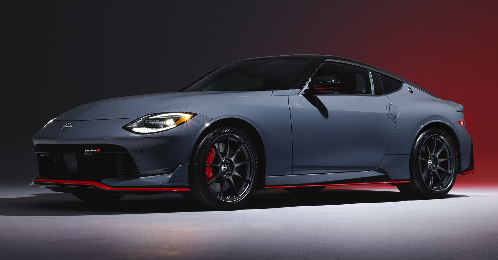
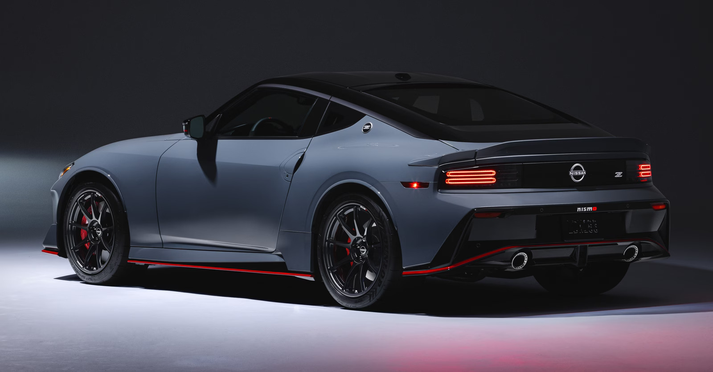
The Z GT500 was unveiled in December 2021, at Fuji Speedway, it was slated to compete in the 2022 Super GT season for the first time in 15 years, replacing the Nissan GT-R GT500, which had been in run for 13 seasons in the Super GT series. The Z GT500 made its racing debut at 2022 Super GT season's Okayama GT 300km round. The car scored its first podium finish in its debut race, as Team Nismo's #23 car, driven by Tsugio Matsuda, made an impressive late charge to climb up to the podium place despite starting 9th on the grid. In the third race of the season at Suzuka International Racing Course, the Z GT500 scored its first race win with team NDDP Racing, driven by Katsumasa Chiyo and Mitsunori Takaboshi, both drivers currently leading the championship with only one race to go.For their final race at Mobility Resort Motegi, the Calsonic Impul Z qualified third while NDDP Racing qualified fourth. On race day, the NDDP Z incurred a drive-through penalty early on so Chiyo and Takaboshi had to fight from 12th to ultimately finish 4th. NDDP Racing came in 2nd for the championship standings as Team Impul eclipsed them in the series ranking with a 2nd place finish during the final round. The #12 Calsonic Impul Z, driven by Kazuki Hiramine/Bertrand Baguette, was crowned champion for the 2022 season.
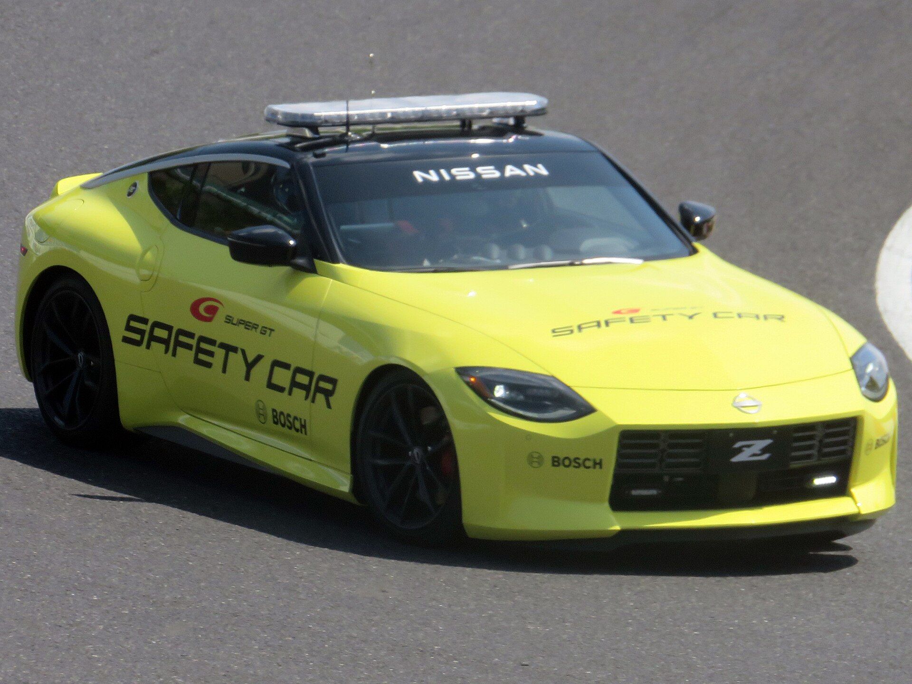
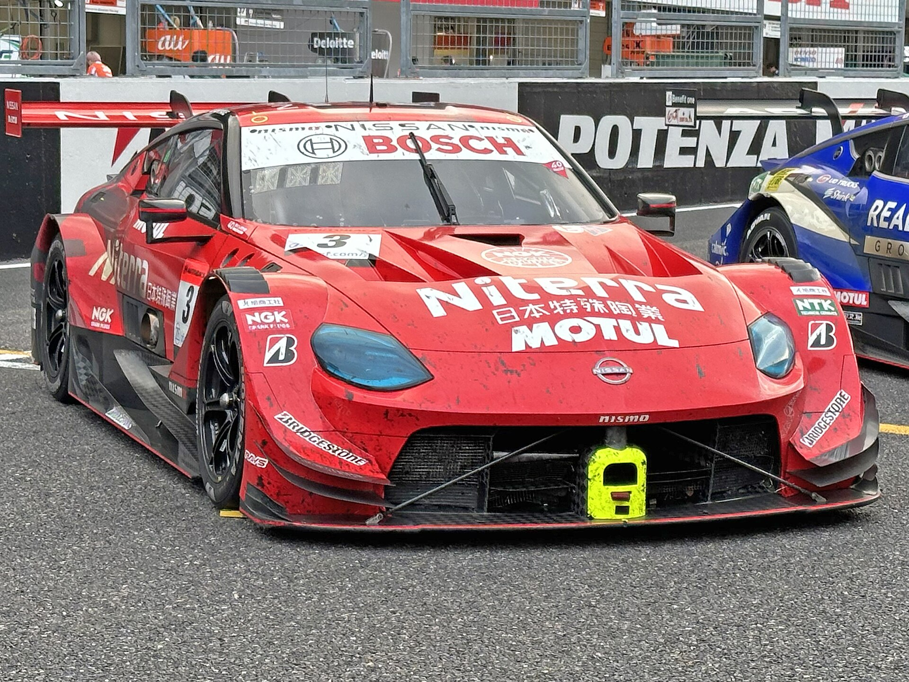
In June 2022, Nissan introduced the Z Racing Concept at 2022 Super Taikyu Series, 24 hours of Fuji round. Two of these racing concepts were entered the race, to aid development of Z's future racing programs and Nissan's carbon-neutral fuel (CNF) compatible engine. Both cars entered the race as non-championship contenders with numbers, 230 and 244. The car 230 was entered by team Nismo, equipped with a CNF compatible engine, the car 244 was entered by Max Racing, equipped with an internal combustion engine (ICE). Additionally, both cars were fitted with a different aero package, compared to the standard Z. Both cars, successfully finished the race.
GT4 class version of the Z was introduced on September 28, 2022, via online platforms. It is the successor of the Z33 and Z34 models that competed in the earliest seasons of SRO's GT4 European series, and joins a long line of customer GT racecars built by Nissan, including the GT2 spec Z33 that raced in the FIA GT Championship and British GT with Team RJN and the GT1 and GT3 competitions with the Nissan GT-R. The Z GT4 was developed by Nissan's motorsport arm, Nismo. In results, some upgrades were done to the road going Z. Including; minor upgrades to the VR30DDTT engine, optimized chassis and suspension for competitive racing and track driving, an aerodynamic package; which includes, a front splitter with canards and GT4-inspired strut-supported rear wing. Other GT4 race car changes; such as the fire suppression system, weight reduction and safety equipment such as a roll cage were also fitted to the car.
Nissan claimed, this particular car was an evolution of the Z Racing Concept, which was used in the 2022 Super Taikyu Series, Fuji 24 hour race earlier in June, 2022. The Z GT4 is expected to compete in Michelin Pilot Challenge and GT4 America Series. The car would make its physical debut at the SEMA Auto Show in November, 2022 and deliveries to begin in the first half of 2023.